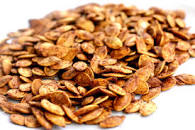

Tasty Toasted Pumpkin Seeds

Description
This recipe is for flavorful, crisp, toasted pumpkin seeds. They are a technically a healthy snack, but surprisingly addictive and munchable!
Ingredients
- The seeds from a regular carving or pie pumpkin.
- 1 tsp cumin powder
- 1 tsp paprika
- 1 and 1/2 tsp ground sea salt (or more, to taste)
- Canola oil cooking spray
Steps
- Scoop pumpkin seeds from pumpkin and rinse clean.A colandar or strainer can be helpful here.
- Spread the pumpkin seeds on a kitchen towel to air dry. Do not use a paper towel because it will stick to the seeds.
- Spread pumpkin seeds on a foil-lined cookie sheet.
- Spray lightly with canola oil cooking spray.
- Sprinkle with cumin powder, paprika, and sea salt.
- Bake at 300 degrees F for 40 minutes or until golden brown.
Home